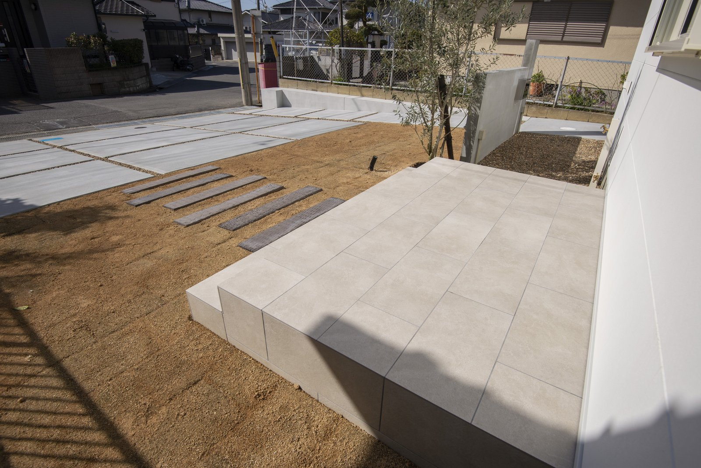
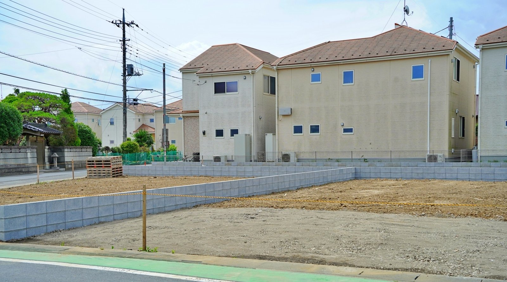
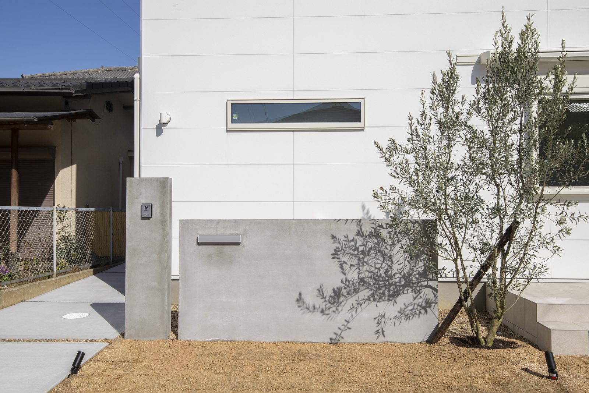

「奈良は災害が少ないから安心」
よく聞きますし、統計を見てもそのとおりです。
それでも、奈良の川は過去に氾濫しています。

道路から玄関までどう上がるか。水の流れ方は、この高さの差で変わります。
土地を決める前に、5分だけ地図を見てください。
無料ですし、住所を入れるだけで終わります。
この記事は、その順番の話です。
調べる順番は、この5つだけ
入口はここです。
ハザードマップポータルサイト（国土交通省）
住所を入れると、その場所のリスクが地図に重なって出てきます。
スマホでも見られます。
土地の内見に行く電車の中で、十分終わります。
見落とされやすいのが「土地の成り立ち」
洪水と土砂災害は、みなさん見ます。
抜けるのが、地形分類という項目です。

ならされた土の下がどうなっているかは、地図の「土地の成り立ち」で見当がつきます。
これは、その土地がどうやってできたかを示す地図です。
自然のままの台地なのか。
盛土や埋め立てでつくられた土地なのか。
昔、川が流れていた場所（旧河道）なのか。
ここは、地盤の強さと液状化のしやすさに直結します。
つまり、地盤改良にいくらかかるかの話にもつながります。
奈良盆地は水田を造成した住宅地が多いので、なおさら見ておく価値があります。
水の心配はなくても、地盤はやわらかいかもしれない。
2つは別の話です。
奈良で知っておきたいこと
奈良県は、全国で見れば災害の被害が少ない県に入ります。
ただ、少ないことと、無いことは違います。
川は氾濫します。
大和川の水系は、これまで何度も水害の記録があります。
県も市町村も、浸水想定区域図を公開しています。
地震もあります。
奈良盆地の東側には、奈良盆地東縁断層帯という長さ約35kmの活断層帯があります。
政府の地震調査研究推進本部は、ここでマグニチュード7程度の地震を想定しています。
県の被害想定では、震度6強から7が想定される地域もあります。
怖がらせたいのではありません。
知っていれば、家の造り方で備えられるという話です。
色が付いていたら、やめるべきか

この差は、水の流れ方にも、工事の費用にも効いてきます。
正直に言います。
奈良盆地は川沿いに街が広がっているので、便利な場所ほど何かしら色が付きます。
全部避けていたら、土地が無くなります。
実は私の自宅も、がっつり色の中でした。
大事なのは、色が付いているかどうかではありません。
どの災害で、どれくらいの深さ・高さが想定されているか。
そこまで見て、対策とセットで決めることです。
建てる側でできること
基礎の高さも、分電盤の位置も、決めるのは紙の上です。
シバ・サンホームは全棟で許容応力度計算という構造計算をしています。
詳しくは性能のページにまとめました。
そして地盤のことは、費用の話と切り離せません。
こちらもあわせてどうぞ。
地盤改良のお金｜土地を買う前に知っておくこと
まとめ
- 土地を決める前に、ハザードマップポータルで住所を入れる
- 洪水・土砂災害に加えて、「土地の成り立ち」まで見る
- 市町村の詳しい地図も見ておく
- 最後は現地で、周りとの高さを自分の目で見る
- 色が付いていても、想定が分かれば家の造り方で備えられる

奈良の工務店シバ・サンホームで、初めての家づくりに伴走しています。お金のことこそ正直に。モットーはスピード・誠実さ・楽しさ。